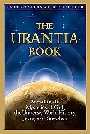

1955
1955 16 jan. Kvinnoorganisationen organiseras.
CARP organiseras
17 jan. Högkvarteret flyttas till Hung Jeong Dong.
30 mars Första utbildningen i Principerna hålls.
11 maj 14 studenter på Ehwa universitetet slutar där och blir fulltidsmedlemmar.
{kind=link}
24 mars 5 professorer på Ehwa universitetet sparkas på grund av kåttersk tro.
I maj 1955 ägde en stor händelse rum i Ehwa University. Fjorton studenter utvisades, och de flesta av dem skulle precis ta examen i juni. På den tiden i Korea var det sällsynt att flickor gick på Gymnasium, så deras familjer blev naturligtvis upprärda när de blev utkastade. Tidningar rapporterade om det. Vissa tidningar sa att vi hade religionsfrihet, att ingen kunde hindra oss från att gå till Unification Church och att universitetet hade gjort fel.
4 juli Han och fyra ledare arresteras (femte gången) av polisen.

4 okt. Han förklaras oskyldig och frisläpps från det ökända
Seodaemun-fängelset i Seoul.
7 okt. Högkvarteret flyttas till Yong San Ku Chung Pa Dong.
8 okt. Han kommer tillbaka från fängelset i Seoul. Eftersom de är så fattiga så firas Hans återkomst av de 20 medlemmarna med endast tre päron och rädisor.

Urantiaboken (ibland kallad 'Urantia papers' eller Femte
epokgörande uppenbarelsen) publiceras 12 okt 1955.
En andlig och filosofisk bok som diskuterar Gud, Jesus, vetenskap,
kosmologi, religion, historia och öde.
Den har sitt andliga ursprung i Chicago någon gång
mellan 1924 och 1955
Kommentar (1936-1945 = var den tidsperiod
Principerna uppenbarades av Sun Myung Moon).
1955-1975Världen:Vietnamkriget var en militär konflikt under kalla kriget i Vietnam, Laos och Kambodja från 1 november 1955 till Saigons fall den 30 april 1975.